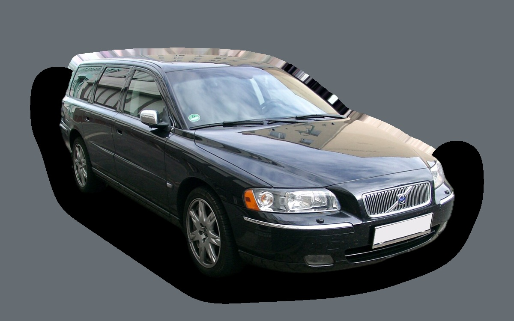

What does a Volvo V70 II cost per month?
A 2007 Volvo V70 II costs about SEK 3,836 a month, all in.
SEK 3,836per month, 2007 model
SEK 32,000price, 2007 model
SEK 299,000last new price
Evalue grade (2007)


Monthly cost by model year
| Model year | Version in the calculation | Price | Per month | Grade |
|---|---|---|---|---|
| 2007 | 2.4 140, Kinetic | SEK 32,000 | SEK 3,836 | E |
Based on 5 years of ownership and 12,500 km a year, with fuel prices from 2026-10-22. The monthly cost includes depreciation, fuel, servicing and repairs, insurance and road tax.
How the cost splits for a 2007 car
- Depreciation: SEK 220/mo
- Fuel: SEK 2,009/mo
- Servicing and repairs: SEK 1,206/mo
- Insurance: SEK 175/mo
- Road tax: SEK 226/mo
Used prices in ads
| Model year | Median price | Ads | Typical mileage |
|---|---|---|---|
| 2007 | SEK 34,700 | 69 | 312,000 km |
| 2006 | SEK 34,000 | 54 | 288,000 km |
| 2005 | SEK 29,400 | 31 | 326,000 km |
The median price in Swedish ads by model year in October 2026 (source: Blocket). Ad prices are asking prices, and the final price may be lower.
Engines and versions
| Engine | Fuel | Power | 0–100 km/h | Consumption (WLTP) | Range | Model years | Extra cost |
|---|---|---|---|---|---|---|---|
| 2.4 140 | Petrol | 140 hp | 9.8 s | 9.4 l/100 km | – | 2005–2007 | – |
| D5 185 | Diesel | 185 hp | 8.5 s | 7.3 l/100 km | – | 2005–2007 | +SEK 30,000 |
| 2.5T AWD 210 | Petrol | 210 hp | 8.2 s | 10.5 l/100 km | – | 2005–2007 | +SEK 45,000 |
- Trim: Kinetic, Summum (+SEK 30,000)
Facts
- Body
- Estate
- Model years
- 2005–2007
- Last new price
- SEK 299,000
- Boot
- 485 litres
- Euro NCAP
- 4 of 5 stars
- New-car warranty
- 3 years
- Reliability
- 3 of 5
- Comprehensive insurance, estimate
- SEK 6,000/yr
- Servicing, estimate
- SEK 4,300/yr
Common faults to watch for
- Timing belt and tensioners (engine damage if it snaps), repair about SEK 8,000
- Clogged crankcase ventilation (PCV), repair about SEK 6,000
- Injectors and swirl flaps (five-cylinder diesel), repair about SEK 7,000
- Automatic gearbox (AW55) slips and jerks, repair about SEK 20,000
- Angle gear and Haldex coupling, repair about SEK 15,000
- ABS/DSTC module, repair about SEK 7,000
- Rust in wheel arches and sills, repair about SEK 15,000
The faults apply to some engines and model years. The calculator works out the risk for the exact version you choose.
Pros and cons
Pro
Classic, hard-wearing family estate that's very cheap to buy.
Con
High fuel use with the petrol engine and pricier repairs as it ages.
Similar cars
 Saab 9-5 SportCombiSEK 3,847/mo as a 2007 model
Saab 9-5 SportCombiSEK 3,847/mo as a 2007 model Peugeot 508 SWSEK 3,850/mo as a 2021 model
Peugeot 508 SWSEK 3,850/mo as a 2021 model Volkswagen Passat B8SEK 3,786/mo as a 2020 model
Volkswagen Passat B8SEK 3,786/mo as a 2020 model Cupra Leon SportstourerSEK 3,936/mo as a 2023 model
Cupra Leon SportstourerSEK 3,936/mo as a 2023 model Audi A4 AvantSEK 3,976/mo as a 2021 model
Audi A4 AvantSEK 3,976/mo as a 2021 model Volvo V60 ISEK 3,661/mo as a 2015 model
Volvo V60 ISEK 3,661/mo as a 2015 model
Updated 2026-10-26 · ad data Oct 2026